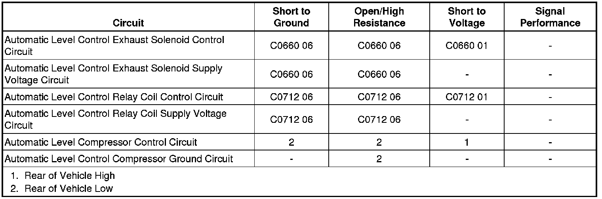

Rear of Vehicle High
Rear of Vehicle High
Diagnostic Instructions
* Perform the Diagnostic System Check - Vehicle (Initial Inspection and Diagnostic Overview) prior to using this diagnostic procedure.
* Review Strategy Based Diagnosis (Initial Inspection and Diagnostic Overview) for an overview of the diagnostic approach.
* Diagnostic Procedure Instructions (Initial Inspection and Diagnostic Overview) provides an overview of each diagnostic category.
Diagnostic Fault Information

Circuit/System Description
The Automatic Level Control (ALC) System uses the electronic suspension control module (ESCM), level sensors, compressor, and exhaust valve to increase or decrease air pressure in the system to control trim height. Battery voltage is supplied to the exhaust valve and compressor relay. The ESCM controls the ground circuits that activate the exhaust valve and compressor relay which maintain trim height based on the level sensor input voltage.
Diagnostic Aids
Performing the Suspension Position Calibration (Programming and Relearning) procedure may correct the condition.
Reference Information
Schematic Reference
Automatic Level Control Schematics (Automatic Level Control)
Connector End View Reference
Component Connector End Views (Connector Views)
Description and Operation
Automatic Level Control Description and Operation (Automatic Level Control Description and Operation)
Electrical Information Reference
* Circuit Testing (Component Tests and General Diagnostics)
* Connector Repairs (Component Tests and General Diagnostics)
* Testing for Intermittent Conditions and Poor Connections (Component Tests and General Diagnostics)
* Wiring Repairs (Component Tests and General Diagnostics)
Scan Tool Reference
Control Module References (Programming and Relearning) for Scan Tool Information
Circuit/System Verification
Ignition ON, command the exhaust valve solenoid ON and OFF with a scan tool. Listen for the exhaust valve clicking.
Circuit/System Testing
1. Ignition OFF, disconnect the harness connector at the ALC compressor.
2. Ignition ON, verify that a test lamp illuminates between the ALC compressor connector B+ circuit terminal C and ground.
• If the test lamp does not illuminate, test the B+ circuit for a short to ground or an open/high resistance. If the circuit tests normal and the ELC fuse is open, test or replace the ALC compressor.
3. Connect a test lamp between the ALC compressor connector control circuit terminal A and the B+ circuit terminal C.
4. Command the exhaust valve solenoid ON and OFF with a scan tool. The test lamp should turn ON and OFF when changing between the commanded states.
• If the test lamp is always ON, test the control circuit for a short to ground. If the circuit tests normal, replace the ESCM.
• If the test lamp is always OFF, test the control circuit for an open/high resistance. If the circuit tests normal, replace the ESCM.
5. If all circuits test normal, test or replace the ALC compressor.
Repair Instructions
Perform the Diagnostic Repair Verification (Verification Tests) after completing the diagnostic procedure.
* Air Compressor Replacement (Air Compressor Replacement)
* Suspension Position Calibration (Programming and Relearning)
* Control Module References (Programming and Relearning) for electronic suspension control module (ESCM) replacement, programming and setup